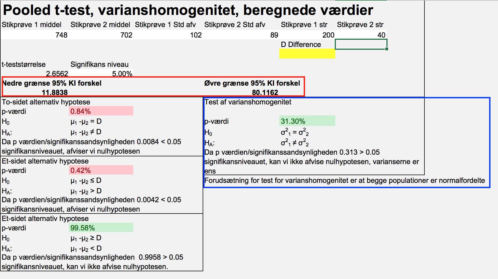
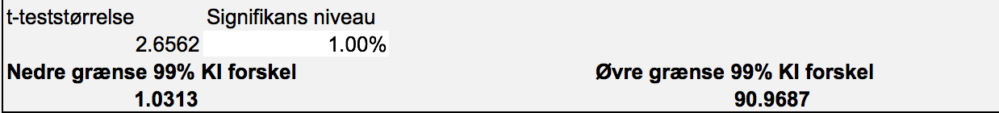
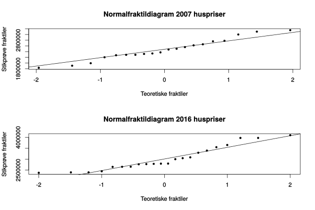
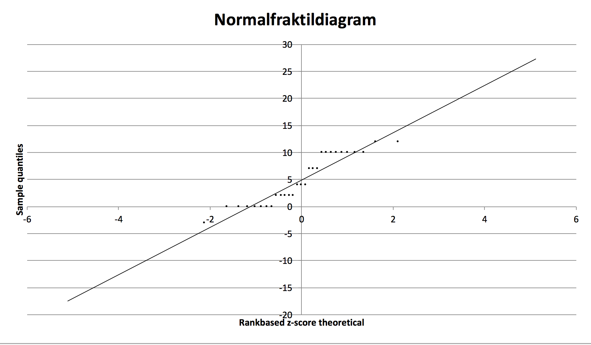
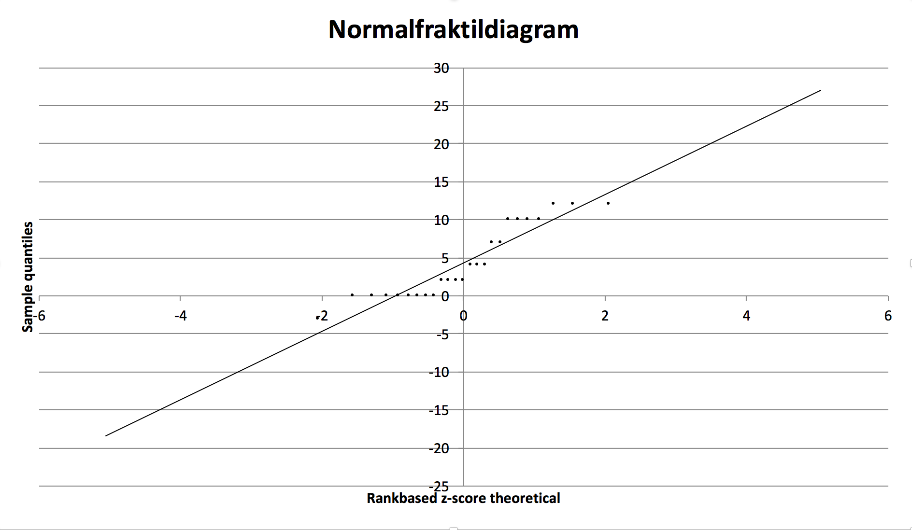
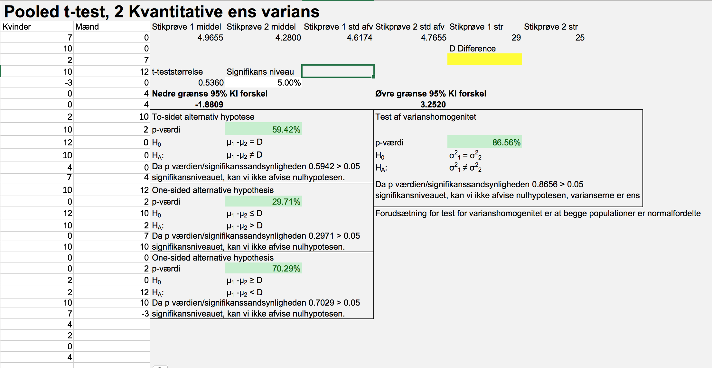
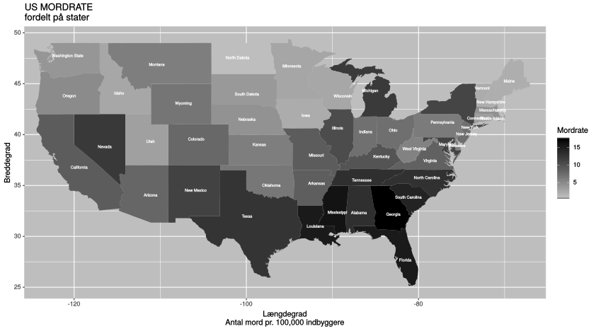
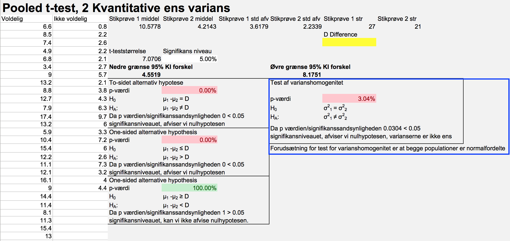
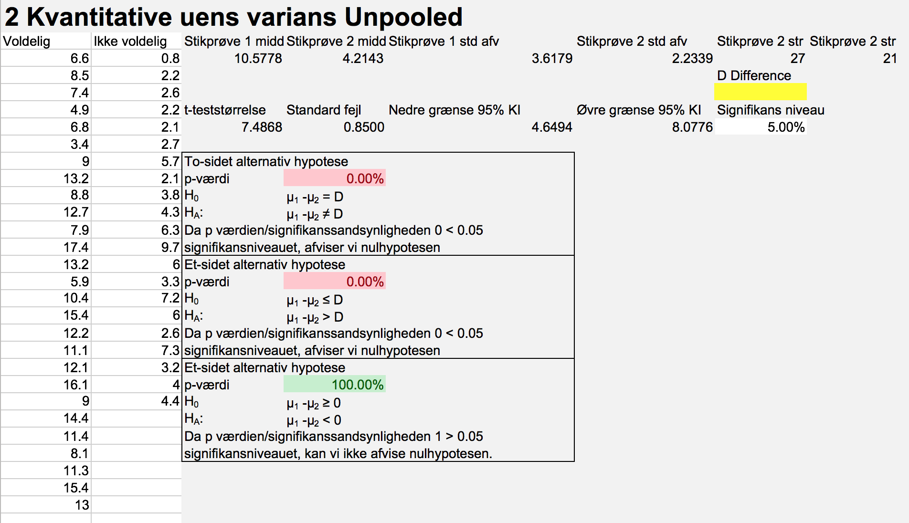

Kapitel 9 2 Middelværdier
9.1 Konfidensinterval for 2 middelværdier
9.1.1 Pooled og unpooled t-test
Vi kan ofte være interesseret i at i at sammenligne middelværdier, til dette kan vi benytte en af flere tests. Hvis vi har 2 kvantitative stikprøver, kan vi undersøge om forskellen i middelværdierne er signifikant forskellig. Det er muligt at bruge en pooled t-test, hvis vi har ens standardafvigelser og dermed ens varianser for de 2 stikprøver. Man bruger en unpooled t-test, hvis varianserne ikke er ens. Vi kan teste om varianserne er ens, en sådan test for varianshomogenitet, findes i det meste software incl. freestat. Hvis man ikke har mulighed for at teste, kan man bruge tommelfingerreglen: Hvis den største af de 2 stikprøvers standardafvigelse, er mere end dobbelt så stor, som den lille stikprøves standardafvigelse, benyttes unpooled t-test.
Vi ser igen på eksemplet med ejendomsmægleren der undersøgte kundernes afstand til filialerne. Den gennemsnitlige afstand til nærmeste filial var, 748 meter i stikprøven med 200 respondenter. Standardafvigelsen er 102 meter.
Mægleren har data fra en tilsvarende undersøgelse hos en konkurrerende kæde, her er den gennemsnitlige afstand 702 meter og standardafvigelsen er 89 i en stikprøve af størrelse 40.
I Freestat kan man sætte de 2 stikprøver, ind analysen Pooled t-test varianshomogenitet i fanen Pooled. Vi får følgende output.

Her har vi som ses af output fra Freestat, valgt mæglerens egen undersøgelse som 1. stikprøve, og konkurrentens som 2. stikprøve. Vi kan med 95% sikkerhed sige at forskellen mellem mæglerens og konkurrentens kunders gennemsnitlige afstand til filial ligger mellem 11,9 og 80.1 meter (markeret med rødt). Da 0 ikke er indeholdt i konfidensintervallet kan vi konstatere at denne forskel er signifikant, der er altså forskel på afstanden til nærmeste filial i de 2 kæder. Vi kan undersøge om vi også er 99% sikre på konklusionen ved at ændre signifikansniveauet til 1%, jo et bredere konfidensinterval, da præcisionen falder, når sikkerheden stiger.
Det er ikke så vigtigt hvilken stikprøve, der er 1. og 2. stikprøve, men det er væsentligt for tolkningen af konfidensintervallet. Bemærk konfidensintervallets øvre grænse, vil hvis man bytter rundt, blive den nedre grænse med fortegnsskift, og tilsvarende for den nedre grænse. Begge grænser i konfidensintervallet er positive, forskellen måles altid som 1. stikprøve minus 2. stikprøve, specielt i dette tilfælde altså kædens egen undersøgelse minus konkurrentens undersøgelse. Det er altid en MEGET god ide, at holde fuldstændig styr på hvilken stikprøve, der er 1. og 2., hvilket vi senere vil se i forbindelse med hypotestests med ensidet alternativhypotese.
Vi skal undersøge om varianserne er ens, tommelfingerreglen er overholdt, da standardafvigelsen for den store stikprøve \(\hat{\sigma}_1=102\), ikke er mere end dobbelt så stor, som standardafvigelsen for den lille stikprøve \(\hat{\sigma}_2=89\). Vi har dog en mere præcis metode, nederst til højre markeret med blåt testes varianshomogenitet automatisk. Vi har endnu ikke gennemgået hvorledes hypotesetests opstilles og aflæses, men vi kan godt forstå sidste del i konklusionen af hypotesetesten, “varianserne er ens”.
Vi kan som nævnt, ændre signifinkansniveauet til 1% se om konfidensintervallet nu indeholder 0.
Vi kan med 99% sikkerhed sige, at forskellen mellem mæglerens og konkurrentens kunders gennemsnitlige afstand til filial ligger mellem 1,1 og 90.9 meter. Vi er altså relativt sikre på vor konklusion, om forskel i afstande til nærmeste filial for de 2 kæder.

9.2 Varianshomogenitet
9.2.1 Forudsætninger
En forudsætning for at benytte pooled t-test, til at undersøge om 2 middelværdier kan antages at være identiske, er at der er varianshomogenitet. For at vi må undersøge om populations varianserne er ens, skal vi først undersøge om populationerne kan antages normalfordelte. Det nemmeste er at undersøge forudsætningen om normalfordelte populationer ved at se på normalfraktildiagrammerne.
I filen huspriser, er indsamlet stikprøver af 22 huspriser fra 2016 og 20 huspriser fra 2007. Hvis vi vil undersøge om der er signifikant forskel i prisen vha. konfidensintervallet, skal vi tjekke at begge stikprøver stammer fra normalfordelinger. Vi kan til dette benytte normalfraktildiagrammer for de 2 stikprøver.

Her vil det ofte være lidt af en skønssag at vurdere om stikprøven stammer fra en normalfordelt population, bemærk små afvigelser fra linjen vil ved mindre stikprøver, virke voldsommere end ved større stikprøver, da vi jo har “zoomet”" ind i normalfraktildiagrammet. I dette eksempel, kan vi godt konkludere at data stammer, fra en normalfordelt population. Afvigelser i enderne tillades i højere grad, end afvigelser omkring midten af diagrammet.
I Freestat genereres normalfraktildiagrammer direkte for en stikprøve, når data indsættes i en stikprøve.
9.3 Sammenligning af 2 middelværdier ens varians Pooled t-test
Hvis vi har 2 stikprøver og ønsker at sammenligne middelværdierne kan vi benytte en pooled t-test, hvis de 2 populationer har samme standardafvigelse.
Man kan undersøge om stikprøvernes varianser er homogene, dette gøres ved en test af om standardafvigelserne er ens:
\[H_0:\sigma_1=\sigma_2\] \[H_1:\sigma_1 \neq \sigma_2\]
Eller ækvivalent om varianserne er ens:
\[H_0:\sigma^2_1=\sigma^2_2\] \[H_1:\sigma^2_1 \neq \sigma^2_2\]
For at konkludere om nulhypotesen skal forkastes, bestemmes signifikanssandsynligheden vha. et F-test. Man kan fx forestille sig en bank ønsker at undersøge om mænd og kvinder, har samme indestående på deres lønkonti. Her kan man, hvis varianserne er ens (de vil normalt ikke være kendte), benytte en pooled t-test. Vi går her ikke i detaljer, med formlerne til beregning af teststørrelsen, software regner dette ud for os.
“I guess I think of lotteries as a tax on the mathematically challenged.” - Roger Jones
Man skal ligesom ved små stikprøver i test af en middelværdi, sikre sig normalitet i populationen. Dette kan på samme måde gøres visuelt i et normalfraktildiagram for de 2 stikprøver.
9.3.0.1 Eksempler
9.3.0.1.1 Statistik karakterer
Vi ser igen på datasættet for statistik karakterer. Vi kunne være interesseret i, at teste om kvinder får højere karakterer end mænd. Der er 29 kvinder i og 25 mænd i stikprøven. Da begge stikprøver er mindre end 30, skal vi undersøge om stikprøven kan antages at stamme fra en normalfordelt population. Dette efterprøves i 2 normalfraktildiagrammer. I Freestat kan man enkeltvis paste begge fordelinger ind i en kvantitativ stikprøve, og indsætte de 2 normalfraktildiagrammer, nedenfor er indsat Freestat normalfraktildiagrammet for kvinder.

Herunder er indsat Freestat normalfraktildiagrammet for mænd.

Vi har nok på forhånd en formodning om at statistik karakterer generelt, følger en bimodal fordeling, enten får man en lav eller høj karakter. Man kan godt ane denne tendens, da vi kan se data ikke ligger helt pænt omkring den rette linje. Bemærk observationerne, illustreret ved punkter, ligger på rette linjer. Dette skyldes vi jo har hele karakterer. Vi konstaterer der synes at være problemer med normaliteten af populationerne, og dermed kvaliteten, præcisionen i analysen. Vi går imidlertid her videre videre med en pooled t-test hvis varianserne for mænd og kvinder er ens, ellers skal vi benytte en unpooled t-test.
\[H_0:\sigma^2_{kvinde}=\sigma^2_{mand}\] \[H_1:\sigma^2_{kvinde} \neq \sigma^2_{mand}\]
Vi konstaterer at signifikanssandsynligheden er 0.8656, hvilket direkte kan aflæses i nedenstående Freestat output. Vi kan altså ikke forkaste nulhypotesen og konstaterer at varianserne er ens, og det er derfor korrekt at anvende pooled t-test til at undersøge om kvinders karakterer er højere end mænds. Når vi tester to middelværdier undersøger vi om forskel mellem middelværdierne er forskellig fra 0. Vi får en t-teststørrelse jo større denne numerisk er jo større er forskellen mellem middelværdierne. En numerisk stor t-teststørrelse udtrykker altså stor forskel. Hypoteserne bliver:
\[H_0:\mu_{kvinder}\leq\mu_{mæ\ nd}\] \[H_1:\mu_{kvinder}>\mu_{mæ\ nd}\]
Hvilket vi også kan skrive som
\[H_0:\mu_{kvinder}-\mu_{mæ\ nd}\leq 0\] \[H_1:\mu_{kvinder}-\mu_{mæ\ nd}> 0\]
Vi får en test-størrelse på 0.536, denne medfører en p-værdi på 29.71%. Vi kan ikke forkaste nulhypotesen.
Vi kan altså ikke konkludere at kvinder får en højere karakter end mænd.
Bemærk i Freestat, står der D for difference, dette skyldes man kan undersøge om en forskel mellem middelværdier kan være fx. 0.25, ved at sætte D, i det gule felt til 0.25.

9.4 Sammenligning af 2 middelværdier uens varians Unpooled t-test.
Skal vi undersøge 2 kvantitative stikprøver, der stammer fra populationer med uens varians, benytter vi unpooled t-test. Det er samme fremgangsmåde som ved pooled t-test, men unpooled testen er ikke så præcis som pooled. Derfor starter vi i pooled t-test og gennemfører kun unpooled t-test hvis varianserne ikke er ens.
9.4.0.1 US crime

Vi har i datasættet US crime, de beregnede rater pr. 100000 borgere fordelt på stat. for hhv. mord overfald og voldtægt. Yderemere er angivet graden af urbanisering, højere betyder staten har større arealer med bymæssig bebyggelse. Observationssættet er baseret på en stor 1973 undersøgelse af 100.000 arrestationer. Mordraterne er illustreret på kortet nedenfor.

Lad os groft dele staterne i voldelige og ikke-voldelige stater, hvis der er 150 overfald/assaults eller derunder, betegner vi staten som ikke voldelig. Stater med mere end 150 overfald pr 100000 borgere betegnes som voldelige.
Er det gennemsnitlige antal mord pr. 100000 borgere lavere i ikke-voldelige stater?
For at besvare spørgsmålet er man nødt til at sortere data efter Assualt og tage Murder med i sorteringen. Herefter skal man dele Murder i de voldelige og ikke-voldelige grupper. Hvis det driller kan man se hvordan sorteringen skal blive længere nede på Vi får følgende hypotesetest:
\[H_0: \mu_{voldelige}-\mu_{ikke-voldelige}\leq 0 \] \[H_1: \mu_{voldelige}-\mu_{ikke-voldelige}> 0 \]
Der er 21 ikke voldelige stater, og 27 voldelige stater. Vi skal altså huske at undersøge om stikprøverne stammer fra normalfordelte populationer, normalfraktildiagrammerne er her udeladt.
Vi skal også undersøge om der er varianshomogenitet. Hvis vi tester varianshomogenitet:
\[H_0: \sigma_{voldelige}=\sigma_{ikke-voldelige}\] \[H_1: \sigma_{voldelige}=\sigma_{ikke-voldelige}\]
Konstaterer vi at på 5% signifikansniveau, ville vi konkludere at der er forskel på varianserne da p-værdien er 0.0303666. Konklusionen er dog niveaufølsom, men vi benytter pooled t-test her.
Vor hypotesetest for middelværdierne bliver:
\[H_0: \mu_{voldelige}-\mu_{ikke-voldelige}\leq 0\] \[H_1: \mu_{voldelige}-\mu_{ikke-voldelige}> 0\]
Vi finder stikprøvegennemsnittene. For mordrater i voldelige stater er stikprøvegennemsnittet 10.58, for ikke voldelige er stater er stikprøvegennemsnittet 4.21.
Nedenfor er Freestat output for testen, vi ser testet for varianshomogenitet i blå ramme ,betyder vi bør benytte unpooled t-test:
 Teststørrelsen i pooled t-testen ovenfor bliver stor 7.0706, der er altså meget stor forskel på mordraten. Vi får tilsvarende nedenfor en unpooled teststørrelse på 7.4868. Begge teststørrelser er langt større end 2, hvilket giver os meget små p-værdier, så vi vil med sikkerhed forkaste nulhypotesen i begge analyser. I unpooled testen bliver p-værdien et meget lille tal, tæt på 0%, dette kan ses i nedenstående Freestat output.
Output fra Freestat når vi benytter unpooled t-test til analysen, ses herunder:

9.5 Parret t-test
I video eksemplet benyttes et datasæt med 2 aktier, dette kan du hente her.
Hvis vi betragter en variabel før og efter en treatment, her kan treatment fx. være en behandling med et medicinsk produkt, det er vigtigt at vi betragter samme respondenter, før og efter treatment. I parret t-test vil der altid være tale om samme størrelse af datasættene før og efter treatment, treatment kan også være tid. Hvis man forestiller sig at en bank måler 40 kunders gennemsnitlige netbank besøgstid, før og efter en softwareopdatering, hvis der her er tale om de samme kunder, kan vi bruge parret t-test her.
9.6 Spørgsmål 2 middelværdier
Spørgsmål 2 middelværdier bankdata.
Vi ser igen på bankdata.
1. Bestem ved hjælp af konfidensintervaller for forskellen om der forskel på kvinder og mænds gennemsnitlige uddannelseslængde?
2. Bestem ved hjælp af konfidensintervaller for forskellen om der forskel på ledelsens og administationens gennemsnitlige uddannelse i populationen?
## New names:
## * `` -> ...1 Svar 2 middelværdier bankdata.
1. Bemærk der er uens varianser, vi skal således benyttet Unpooled t-test til at bestemme konfidensintervaller.
Der er 216 kvinder, deres gennemsnitlige uddanelseslængde er 12.37, Der er 258 mænd, deres gennemsnitlige uddanelseslængde er 14.43
Vi kan med 95% sikkerhed sige at forskellen på mænds og kvinders gennemsnitlige uddannelse i populationen, ligger mellem 1.58 år og 2.54 år.
Vi kan med 99% sikkerhed sige at forskellen på mænds og kvinders gennemsnitlige uddannelse i populationen, ligger mellem 1.43 år og 2.69 år. Vi er altså ret sikre på, at der er forskel på uddannelseslængden for mænd og kvinder, da 0 ikke engang er indeholdt i 99% konfidensintervallet.
Havde vi i stedet benyttet pooled t-test havde vi nået samme konklusion, der er ikke meget forskel på grænserne:
Vi kan med 95% sikkerhed sige at forskellen på mænds og kvinders gennemsnitlige uddannelse i populationen, ligger mellem 1.57 år og 2.55 år.
Vi kan med 99% sikkerhed sige at forskellen på mænds og kvinders gennemsnitlige uddannelse i populationen, ligger mellem 1.42 år og 2.7 år. Vi er altså ret sikre på, at der er forskel på uddannelseslængden for mænd og kvinder, da 0 ikke engang er indeholdt i 99% konfidensintervallet.
2. Bemærk der er uens varianser, vi skal således benyttet Unpooled t-test til at bestemme konfidensintervaller. Der er 363 personer i administative stillinger, deres gennemsnitlige uddanelseslængde er 12.87, Der er 84 i ledelsen, deres gennemsnitlige uddanelseslængde er 17.25
Vi kan med 95% sikkerhed sige at forskellen på ledelsens og administrationens gennemsnitlige uddannelse i populationen, ligger mellem 3.96 år og 4.81 år.
Spørgsmål 2016 8 Eksamen statistik Fin opg 3.
Opgave 3 (30 %) En række klagesager i Nykøbing Bank har fået en del kunder til at forlade banken. Det er vigtigt for Nykøbing Bank at fastholde sine kunder i lokalområdet i mange år. Banken ønsker derfor en nærmere analyse af kundeancienniteten.
Spørgsmål 3.1 (5 %)
Undersøg om kundeancienniteten i banken er normalfordelt.
Spørgsmål 3.2 (10 %)
Test på 5 % testniveau om den gennemsnitlige kundeanciennitet er under 20 år.
I undersøgelsen fra 2015 var kundeancienniteten på 20 år med en standardafvigelse på 10 år.
Spørgsmål 3.3 (5 %)
Test på 5 % testniveau om standardafvigelserne er ens i de 2 undersøgelser.
Spørgsmål 3.4 (10 %)
Test på 5 % testniveau om den gennemsnitlige anciennitet er faldet fra 2015 til 2016.
Du finder hele opgaver i linket: